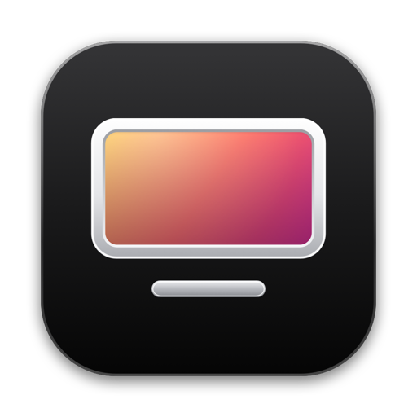
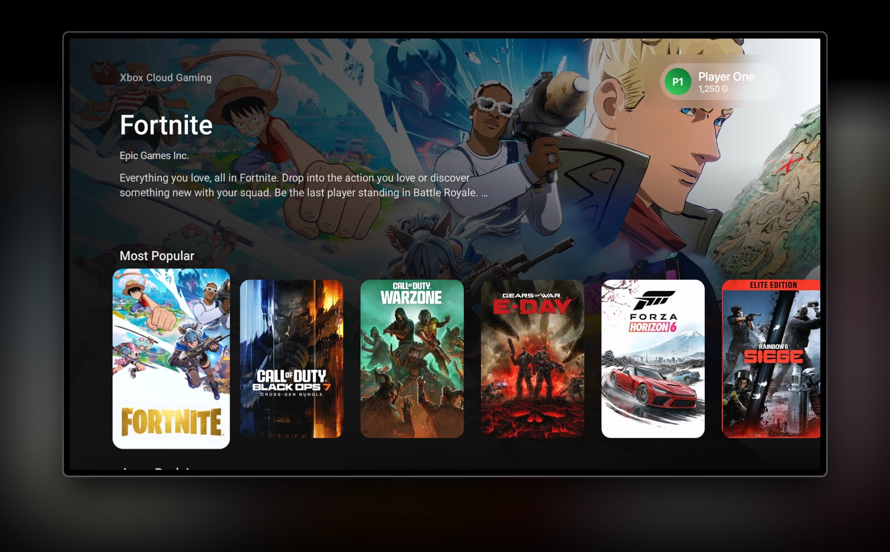
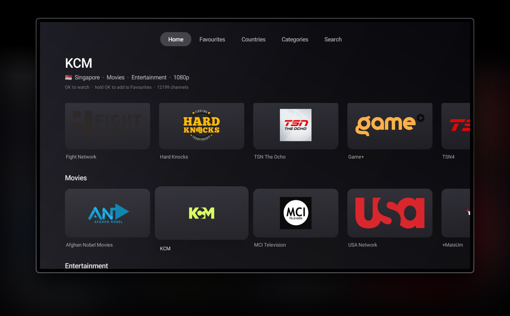
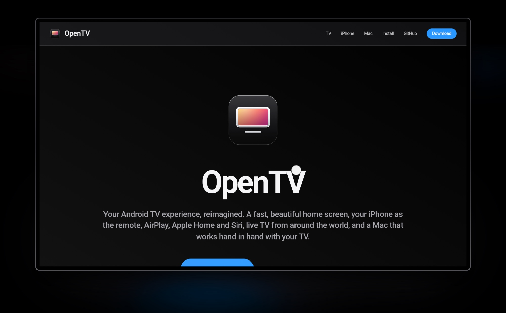
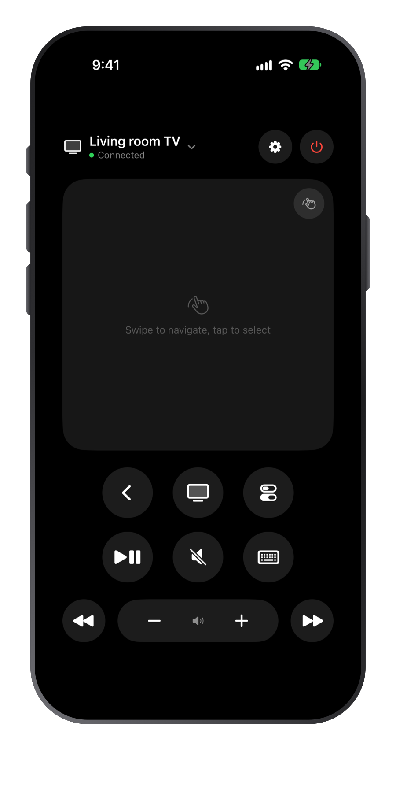
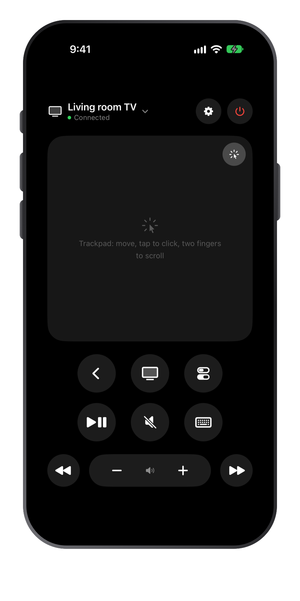
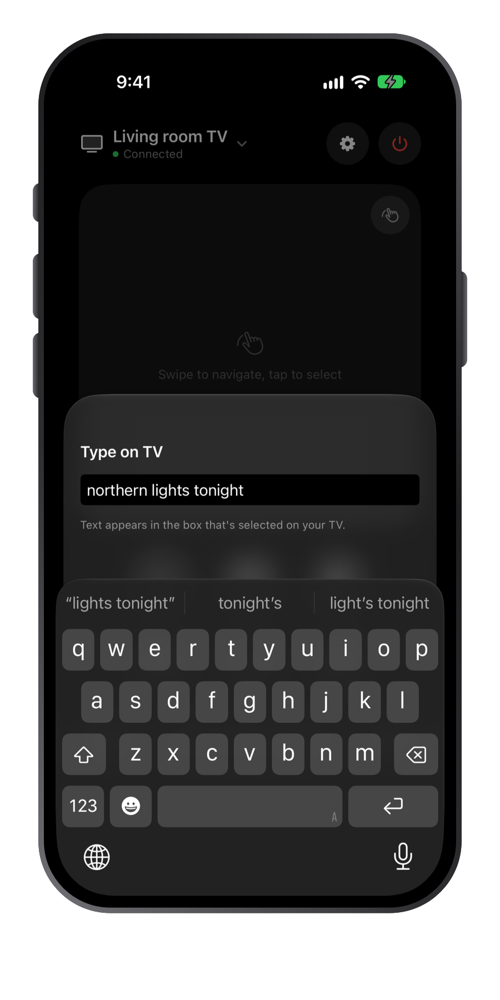
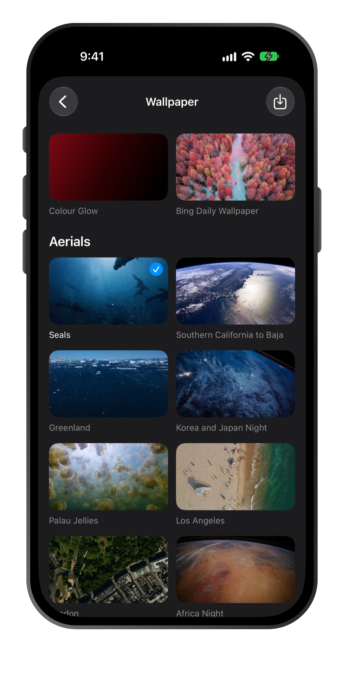

OpenTVYour Android TV.
Beautifully reimagined.
A calm home screen that puts your apps first. Your iPhone as the remote. AirPlay, Apple Home and Siri, live TV from around the world and Xbox cloud gaming, on the TV you already have. Free and open source.
For Android TV and Google TV, Android 8 and later.
Try it. Swipe and tap on the iPhone, or click the TV and use ←→↑↓, return and esc.
Take a closer look.
Control Center. Hold Home for power, sleep timer, screen saver, volume, AirPlay and Apple Home.
Wallpaper. Colour Glow, Bing's picture of the day, aerials, desktop pictures or your own photos.
Screen Saver. Aerials with captions, your pictures, or a quiet clock. Or simply the same as your wallpaper.
Always new. A different place on screen whenever you like, changed from the TV or your iPhone.
All from the couch
Play Xbox games without a console.
Watch 12,000 free live channels.
Browse the web with a trackpad.
AirPlay from your iPhone and Mac.
Ask Siri to turn the TV off.
One remote. One home screen. Everything you watch and play, together on the TV you already own.
TV and Beyond
The best apps,
made to feel at home.
OpenTV comes with apps designed for the big screen and the remote: Xbox Cloud Gaming that knows your games and friends, IPTV with free channels from almost every country, and a Browser with a real trackpad.
Cloud Gaming
Sign in once from your iPhone with your saved passwords. Your gamertag, Gamerscore, friends and the games you've played, with achievement progress, all on the TV. The remote even works as a controller.

IPTV
Live TV from around the world, by country and category. Channel up and down while you watch.

Browser
Tabs, favourites and popular sites, with a pointer you move from the iPhone's trackpad.

Otv Remote
Your iPhone.
The only remote you need.
Swipe to move, tap to select and use the iPhone's own volume buttons. Open a web page and it becomes a trackpad. Type with the keyboard you know. And set up the TV, from wallpaper to Bluetooth, without leaving the couch.



Volume buttons
The iPhone's own buttons change the TV's volume while the app is open.
Control Center
Remote, play and pause, power and volume on the Lock Screen and in Control Center.
Send to TV
Share a video, a show, a song or a web page and it opens on the TV.
TV settings
Inputs, wallpaper, screen saver, Bluetooth and software updates.
Sign in with saved passwords
Sign the TV in to Xbox on your iPhone; the session reaches the TV encrypted.
Always ready
Pair once. It reconnects by itself and wakes the TV. The whole family can connect.
Live Wallpapers
Aurora
Underwater
Colour Glow
The northern lights, moving over the mountains.
Light drifting down through the sea.
A soft glow in the colour of the app you're on.
Scenes that never repeat.
Drawn live on your TV.
Drawn by the TV itself, live, behind your apps. Nothing to download and never the same twice. Or pick slow-motion aerials, desktop pictures, Bing's picture of the day or your own photos.
A screen saver to match. When the TV sits idle, the scene fills the screen with a quiet clock. And it's made for small chips: OtvOS tidies caches while you're not watching and keeps even a Chromecast quick.
Personalize
Change the scenery.
Right from your phone.
Wallpaper, live.
Pick an aerial, a desktop picture, Bing's picture of the day or one of your own photos on the iPhone, and the TV changes in an instant. Screen savers follow along, or pick their own.

OpenTV Companion
Your Mac and your TV.
Finally on speaking terms.
TV as a display
Extend your Mac onto the TV, mirror it, or put iPhone Mirroring on the big screen. Even lower latency over USB-C.
Your pointer on the TV
Push the cursor past the top of your screen and keep going. Push back to return.
Send to TV
The tab in your browser, or the video in QuickTime or VLC, carries on on the TV.
TV Manager
Every app on the TV: open, stop, clear, turn off or uninstall. Drop an .apk to install it.
Tweaks
Resolution, animations, ad-blocking DNS, HDMI-CEC, screenshots and files.
Wired mode
Plug the TV into your Mac and remote, display and pointer all go over the cable.
And so much more.
AirPlay
Play and mirror from iPhone, iPad and Mac.
Apple Home and Siri
The TV joins the Home app. Turn it on and off and change the volume with Siri.
Looks after itself
Keeps storage free and the TV quick, while you're not watching.
Private by design
Everything stays on your network. No accounts with us, nothing collected.
Software Update
New versions arrive on their own, or from the iPhone's TV settings.
Easy to undo
The installer puts your TV back exactly as it was, any time.
Install
Pick your way in.
First, on the TV: Settings › System › About, press Android TV OS build seven times, then turn on USB debugging and Wireless debugging in Developer options. Not needed for the no-computer way.
Easiest · Mac
OpenTV Installer
- Download it, unzip, and open it (right-click › Open the first time).
- Pick your TV: it finds it on your Wi-Fi or over USB-C.
- Choose what to install and press Install. Run it again any time to update, or to restore the TV.
No computer · TV
Straight from the TV
- Install Downloader from the TV's app store.
- Open
harkhowalia-1.github.io/OpenTV/apkand install OtvOS. For IPTV,harkhowalia-1.github.io/OpenTV/iptv. - Settings › System › Accessibility › OtvOS: turn it on. Press Home.
Any computer · adb
Command line
- Download OtvOS.apk, connect with
adb connect <tv-address>and run:
adb install -r -g OtvOS.apk adb shell settings put secure enabled_accessibility_services com.gathin.tvhome/com.gathin.tvhome.HomeKeyService adb shell settings put secure accessibility_enabled 1 adb shell cmd package set-home-activity --user 0 com.gathin.tvhome/.MainActivity
iPhone
Otv Remote
- Download the IPA below.
- Install it with AltStore or Sideloadly, which sign it with your own Apple Account.
- Open it and pick your TV. Or build it yourself with Xcode from the source.
Works with
Almost every Android TV.
Android TV and Google TV from Android 8 onward. Built and tuned on a Chromecast with Google TV (HD), so it's right at home on small chips.
Chromecast with Google TVGoogle TV StreamerNVIDIA ShieldSony BraviaTCLHisensePhilipsXiaomi Mi Boxonn. 4KAndroid TV boxes